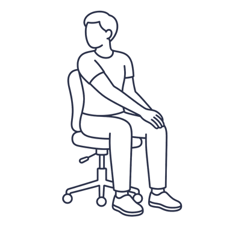

Intermezzo nudges you to take short, guided wellness breaks through your workday — stretch, fix your posture, rest your eyes, and check in with your mind. A brief movement between the heavier movements of your day, because you weren't built to sit hunched at a screen for eight hours straight.
A short, light interlude played between the main movements of a larger work — a graceful pause that lets everyone breathe before the next movement begins.
We've all been there — hours deep in a working session, shoulders creeping up to your ears, back slowly curling into a question mark. By the time you notice, your neck is stiff and your hips are screaming.
An intermezzo is that pause for your workday: a brief, deliberate rest that lets you set down the tension and come back a little lighter. Each break is tailored to the time of day and what your body actually needs — not just another reminder to "take a break."
Every part of Intermezzo is built to feel like a moment apart — not another notification demanding your attention.
Picks 1–3 exercises per break, mixing different body areas and adapting to the time of day. Mornings ease you in; afternoons target the tension that's built up.
Neck, shoulders, spine, chest, hips, legs, wrists — plus eye-rest breaks for screen strain. Each one written like a friend is coaching you through it.
Per-side countdowns for stretches that need them. Just hit Start and follow along — no counting, no guessing how long to hold.
Every stretch has an illustrated stick-figure guide, and many link to short video tutorials so you can see exactly what to do.
Mid-task? Snooze and pick it back up when you're ready. Set reminders anywhere from every 15 minutes to every 2 hours — you're in control.
A soft, bowed cello swell marks the start and finish — not a notification beep. The whole break is designed to feel like a moment apart.
Over fifty exercises spanning every place tension likes to hide — including eye-rest breaks for screen strain — each paired with a simple illustration and a friendly, step-by-step coach.
Some breaks end with an optional, on-device moment for your mind — 25 short practices grounded in cognitive behavioral therapy (CBT), one of the most evidence-backed approaches for easing a busy, anxious mind. Set them to Off, Occasional, or Always.
And on a string of rough days, a quiet, dismissible note points toward real human support — never an alarm, never anything sent anywhere.
"One thing — however tiny — that went okay since your last break?"
"Notice three things you can see, two you can hear, and one you can feel right now."
Both drawn from CBT · private & on-device — never leaves your browser
A system notification and a soft chime fire even when Chrome is in the background — so the nudge lands whether you're in Figma, a fullscreen video, or a game, not just when you're looking at a tab.
Click it to open your guided break, or hit Snooze and Intermezzo will find you again in a few minutes.
Paste a Discord or Slack webhook and your name, and Intermezzo posts a friendly note to that channel each time you finish a break — a gentle nudge for your friend group or team to move too.
Leave it blank and nothing is ever sent. Calm, private, and account-free — your data stays on your device.
Toggle reminders on, choose your interval (15 min to 2 hours), how many exercises per break, and whether to include mind moments.
A gentle notification and soft chime reach you in any app. Click to begin — or snooze and pick it up in a few minutes.
Each exercise has a description, a visual guide, and a countdown. Navigate, skip, or flow through the whole routine.
A little confetti, a kind word, and your streak ticks up — and, if you like, a note to your channel so friends move too.

Sit tall, place your right hand on your left knee. Gently twist your torso to the left, looking over your left shoulder. Hold 20 seconds, then switch sides.
Intermezzo is landing on the Chrome Web Store soon — a gentle interlude on its way into your day. It'll be free & open source when it arrives.